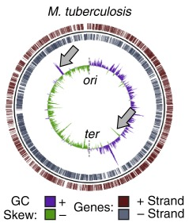

Merrikh et al. Nature Communication, Nov 2018, Fig. 1B
Essentailly all bacteria display a positive GC skew -- a higher abundance of guanine relative to cytosine within the leading strand of each chromosome arm. This asymmetry appears to predominantly result from the mutational bias of DNA replication forks, implying that each gene's typical orientation (leading or lagging strand encoding) can be inferred from its GC skew value. Notably, a change-of-orientation event will, by definition, exchange the number of guanines and cytosines in the inner/outter strand. This causes the GC skew value to invert (the value is multiplied by -1). Therefore, negative GC skew values may indicate that a gene is in an atypical orientation relative to its long term evolutionary history. As such, GC skew-based analyses may provide insights about the evolutionary history of bacterial chromosomes. Terminology is a critical concern in these analyses. Any change-of-orientation event can be can be considered a gene inversion in the relative sense. However there are two sub categories of inversion: those that result in a negative GC skew, placing a gene in an atyipical orientation, and those that revert a gene to is's ancestral orientation, yielding a positive GC skew (GC skew reversions).
Under the assumption that a GC skew value indicates that a gene is in the atypical orientation, we performed a genome-wide analysis of several bacteria. We discovered that most genes on the lagging strand appear to be in the atypical orientation (which we originally referred to as the "inverted" state), whereas nearly all leading strand genes are in the typical orientation. Therefore, we inferred that the vast majority of bacterial genes were typically encoded on the leading strand throughout the course of evolution. This could be caused by negative selection pressure against lagging strand genes which, when expressed, can cause severe head-on replication-transcription conflicts. Our manuscript also discusses the implications of these conclusions for altering mutation rates in a gene-specific manner, and potentially making the cell more adaptable as a whole.
In contrast to our interpretation of negative GC skew values, work by others including Chen et al. suggests that selection can cause GC skew values without inversion. Data suggests that genes gain increasingly positive GC skew values relative to the coding strand of the gene rather than the leading strand of the replication fork. Under this model, the negative GC skew of genes on the lagging strand could be caused by selection rather than gene inversion. If correct, this would undermine the validity of our original conclusions. (Notably, there are many genes on the lagging strand of all bacteria that have a positive GC skew, providing one piece of evidence against this model.)
We favor the model that mutational pressures drive the GC skew of all genes to become positive with respect to the leading strand of the replication fork. This model suggests that negative GC skew regions should eventually re-acquire a positive GC skew through mutagenesis. Hypothetically, mutations should frequently be retained at positions under low selection pressure. For example, codon position 3 (CP3) nucleotides are in the wobble position, meaning that they can be mutated without altering the encoded amino acid. Conversely, nucleotides in codon position 1 (CP1) generally cannot be changed without altering the encoded amino acid, and are therefore under higher selection pressure. This sets up the expectation that the mutational pressure driving the GC skew should far easier to detect in CP3 than CP1 nucleotides. Therefore, we performed a a comparison of CP1-based versus CP3-based GC skew values, focusing on genes that, across the entire sequence, have negative average GC skew.
The GC skew is driven by the mutational footprint of the replication fork. This causes an increase in guanine relative to cytosine in the leading strand of both leading and lagging strand genes.
Prediction: Among genes with a negative average GC skew, the CP1-based GC skew should be negative. However, the CP3-based value should be higher, and often positive, matching the typical value observed across the leading strand.
This model claims that selection drives the GC skew to be increasingly positive with respect to the coding strand of each gene. This causes many lagging strand genes to gain an increasingly negative GC skew value (with respect to the leading strand of the replication fork).
Prediction:Among genes with a negative average GC skew, the highly mutable CP3 nucleotides should display a lower GC skew value than the more constrained CP1 nucleotides.